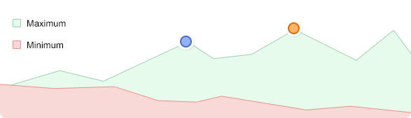

Other than the fact that they have to be single color, they are superior to using images as icons in every way. But which do you choose? There are loads of different sets out there. I'm going to attempt to round them all up here and keep this updated (this post has already been updated several times).
Continue Reading
Pictures that inspire me
Work process on futered month

Other than the fact that they have to be single color, they are superior to using images as icons in every way. But which do you choose? There are loads of different sets out there. I'm going to attempt to round them all up here and keep this updated (this post has already been updated several times).
Continue Reading
Reading for development
Other than the fact that they have to be single color, they are superior to using images as icons in every way. But which do you choose? There are loads of different sets out there. I'm going to attempt to round them all up here and keep this updated (this post has already been updated several times).
Continue Reading
?
Simple is good.
- Jim Henson
Other than the fact that they have to be single color, they are superior to using images as icons in every way. But which do you choose? There are loads of different sets out there. I'm going to attempt to round them all up here and keep this updated (this post has already been updated several times).